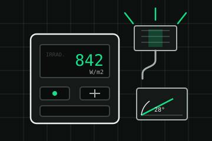
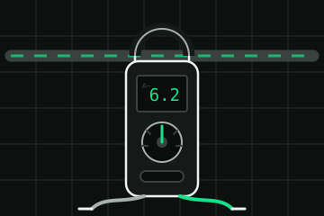
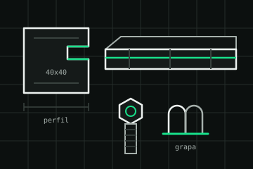

Instalación fotovoltaica · Lalín · Pontevedra · desde 2016
Lo que decide tu instalación no es el sol: es la sombra
Todo el mundo enseña paneles al mediodía de julio. Nosotros empezamos midiendo la chimenea, el castaño del vecino y el alero, porque una sombra de dos horas sobre la fila mala se lleva por delante media producción. Primero el estudio; los números, después.
- Estudio previo
- gratuito, con informe de sombras por horas
- Montaje
- dos o tres días según tejado
- Legalización
- la hacemos nosotros, incluida
01 La sombra
Un día entero sobre tu tejado
Este es el estudio que hacemos antes de dar un solo número: el sol recorre el día, la sombra de la chimenea y del árbol barre el tejado, y se apunta qué paneles quedan tapados y a qué hora. Baja y pasa el día.
De ahí el nombre: el gnomon es la varilla de un reloj de sol, la pieza que no da luz —da sombra— y sin la cual el reloj no marca nada.
14:00
los 20 paneles al sol · es la mejor franja del día
- Mañana · con el sol al este, el castaño del vecino se come la esquina derecha y la chimenea alarga su sombra sobre la columna de la izquierda.
- Mediodía · las sombras se acortan y el faldón trabaja entero: es la franja que más produce y la que casi nadie mira.
- Tarde · el sol cae al oeste y la chimenea vuelve a tapar, esta vez hacia la derecha.
Simulación de muestra escrita para esta demostración: un tejado inventado y una sombra aproximada. El estudio real se hace en tu tejado, con la orientación y la altura de cada obstáculo medidas.
02 Qué se monta
Cuatro cosas, y ninguna es un milagro
No trabajamos con una sola marca ni tenemos «la placa mágica». Lo que cambia una instalación es dónde se pone y cómo se sujeta, no el logotipo del panel.
-
01
Paneles
Monocristalinos de 430 a 460 W, con 25 años de garantía de producto y de rendimiento del fabricante. La potencia real depende del tejado, no del catálogo.
- Potencia
- 430–460 W
- Garantía
- 25 años
-
02
Inversor
Con optimizadores por panel cuando hay sombras parciales: si una fila se tapa, el resto sigue trabajando. Es justo la pieza que evita que una chimenea arruine una instalación.
- Garantía
- 10 años ampliables
- Monitor
- por panel
-
03
Batería (opcional)
De 5 a 10 kWh. No siempre sale a cuenta: si consumes de día, puede sobrar. Te decimos cuándo no la necesitas, aunque sea la parte más cara del presupuesto.
- Capacidad
- 5–10 kWh
- Garantía
- 10 años
-
04
Estructura y sujeción
Aluminio y tornillería de acero inoxidable, con el cálculo de viento del sitio. En Galicia el viento manda más que el granizo, y una estructura floja se ve a los dos inviernos.
- Material
- aluminio + inox
- Cálculo
- viento por zona
03 Casos
Tres ejemplos, y lo que no dicen
Antes de la tabla: estos tres casos son inventados para esta demostración. Ni son clientes reales ni son una previsión para tu casa. Lo que ahorra una instalación depende de cuánto consumes, a qué hora lo consumes y de la sombra que tenga tu tejado; por eso no publicamos porcentajes de ahorro y sí el estudio previo.
| Caso de ejemplo | Consumo al año | Potencia | Producción estimada | Lo que no dice |
|---|---|---|---|---|
| Piso con gas | 2.400 kWh | 2,2 kWp | 2.700 kWh/año | Consume de noche: sin batería, se vierte más de la mitad. |
| Casa con bomba de calor | 7.800 kWh | 5,5 kWp | 6.600 kWh/año | El invierno es el que manda, y es cuando menos se produce. |
| Taller pequeño | 14.000 kWh | 12 kWp | 14.500 kWh/año | Trabaja de día: es el caso en el que mejor encaja. |
Cifras de ejemplo, inventadas. La producción estimada sale de una simulación tipo para esta demostración, no de una medición. No hay dos tejados iguales.
04 Papeles
Lo que va detrás de la instalación
La parte que no se ve en las fotos y que decide si la instalación está bien hecha. La hacemos nosotros y va en el presupuesto.
01
Memoria técnica y boletín
Firmados por técnico competente. Sin eso, la instalación no existe para nadie más que para ti.
02
Registro y CAU
El código que identifica tu instalación de autoconsumo. Es lo que permite lo siguiente.
03
Compensación de excedentes
El acuerdo con tu comercializadora para que lo que viertes te descuente en la factura. Lo tramitamos, pero el precio lo pone ella.
04
Ayudas y licencias
Preparamos la documentación de las convocatorias que estén abiertas y la licencia o comunicación del ayuntamiento. No prometemos plazos: no dependen de nosotros.
05 Quién sube al tejado
Tres personas y sus aparatos
Somos los mismos que vamos a medir y los que volvemos a montar. Aquí nadie se presenta con una foto de archivo, así que cada uno se presenta con lo que lleva en la mano.
-

Marisa Vilar
Estudio previo y diseño
Sube con el medidor y el inclinómetro, y dibuja el reparto de paneles. Es quien dice que no cuando un tejado no da.
-

Xoán Ferradás
Instalación eléctrica y puesta en marcha
Cuadro, protecciones e inversor. Hace la prueba de aislamiento delante de ti y te enseña el primer dato de producción.
-

Iria Cachafeiro
Estructura, cubierta y mantenimiento
Fija la estructura y repasa los anclajes al año. Si hay que tocar una teja, la toca ella.
- instalaciones al año
- 60
- años trabajando
- 10
- días de montaje
- 3
- revisión incluida
- 1
06 Precios
Precios de muestra, sin sorpresas
Importes inventados para esta demostración. Incluyen material, montaje, legalización y puesta en marcha; no incluyen obra civil ni refuerzos de cubierta, que se valoran aparte si hacen falta.
| Instalación | Qué incluye | Desde |
|---|---|---|
| Estudio de sombras | Visita, medición e informe por horas | gratuito |
| 2,2 kWp · 5 paneles | Material, montaje y legalización | 3.400 € |
| 5,5 kWp · 12 paneles | Material, montaje y legalización | 6.900 € |
| 12 kWp · 26 paneles | Material, montaje y legalización | 13.800 € |
| Batería de 5 kWh | Equipo, montaje y configuración | 3.900 € |
| Optimizadores | Por panel, para tejados con sombra | 85 € |
| Revisión anual | Limpieza, apriete y revisión de producción | 140 € |
| Refuerzo de cubierta | Se valora tras el estudio, si hace falta | a medida |
Precios ficticios, IVA no incluido. Las ayudas, cuando las hay, se descuentan después y no las adelantamos nosotros.
07 Preguntas
Lo que se pregunta en el tejado
¿Cuánto voy a ahorrar?
No lo sabemos hasta ver tu consumo por horas y la sombra de tu tejado, y desconfía de quien te dé un porcentaje por teléfono. Lo que sí podemos decirte tras el estudio es cuánta energía producirías y qué parte de tu consumo encaja con ella; el dinero depende de tu tarifa, que cambia.
¿Y si mi tejado no da?
Te lo decimos y no montamos. Ha pasado: orientación norte con sombra de edificio, cubiertas de fibrocemento que hay que retirar antes, o tejados donde solo caben cuatro paneles y no compensa. El estudio es gratis justo para eso.
¿Me quedo sin luz si hay un apagón?
Con una instalación normal, sí: por seguridad se desconecta de la red. Solo si montas batería con función de respaldo mantienes algunos circuitos. Es una pregunta que casi nadie hace antes de firmar y conviene hacerla.
¿Y el granizo y el viento?
Los paneles aguantan granizo según norma y lo que de verdad hay que calcular aquí es el viento. La estructura se dimensiona para la zona y se repasa en la revisión del primer año.
¿Hay que limpiarlos?
Con la lluvia de aquí, poco. Una vez al año se revisa suciedad, sombras nuevas —un árbol crece— y apriete de la estructura. Eso es el mantenimiento, no una limpieza mensual.
¿Cuánto dura la instalación?
Los paneles tienen 25 años de garantía de rendimiento y el inversor 10. Al cabo de unos años el inversor suele ser la primera pieza en cambiarse: conviene contarlo con eso desde el principio.
08 Visita
Empezamos por tu tejado
Con la dirección, el tipo de cubierta y una factura de luz reciente ya podemos preparar la visita. El estudio no cuesta nada y no obliga a nada.
- Nave y oficina
- Rúa da Corredoira 44, nave 2
36500 Lalín · Pontevedra - Teléfono
- 986 00 00 00
Número de muestra: no funciona. - Correo
- hola@gnomon.example
- Horario
- Lunes a viernes 08:30 – 18:30
- Zona
- Deza, Tabeirós y Terra de Montes
El mapa no se carga hasta que lo pides: así esta página no pone cookies de terceros por su cuenta. La dirección es inventada, así que el mapa muestra la localidad, no una calle concreta.